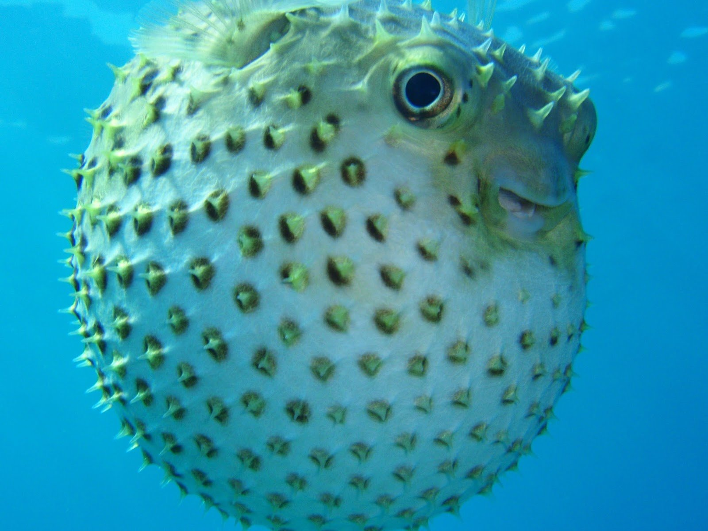

рыба фугу
—знаменитый во всем мире японский деликатес, прославившийся не только своим изысканным вкусом, но и разговорами о ее смертельной опасности. Действительно, эта рыба ядовита, однако яд у нее находится только на коже, в печени, и в глазах. В Японии повара прежде чем работать с рыбой-фугу проходят 2-летние обучение, по итогам которого получают лицензию на право разделывать этот деликатес. Это целая наука, которую они постигают в совершенстве, и неудивительно — ведь в их руках здоровье и жизнь людей!!!

Фугу – это маленькая рыбка, обычно размером с ладонь. На теле фугу нет чешуи, но ее кожа покрыта иглами-колючками различной длины (отсюда и их название). Есть у рыбы фугу еще одна известная особенность, которая очень часто обыгрывается в поп-культуре: при приближении опасности, она надувается в шар, увеличиваясь в размерах примерно в три раза.
Традиционное блюдо японской кухни из некоторых видов ядовитых рыб семейства иглобрюхих рода Takifugu (также называемых рыба фугу)
- Сделать аккуратный надрез вокруг рта, убрать зеленоватую чешую.
- Удалить оба глаза и позвоночник.
- Потрошить брюхо.
- На голове рыбы сделать несколько надрезов и аккуратно убрать мозг.
- Тщательно промыть всю рыбу.
размеры
это зовисит от особи
а где опладисменты???